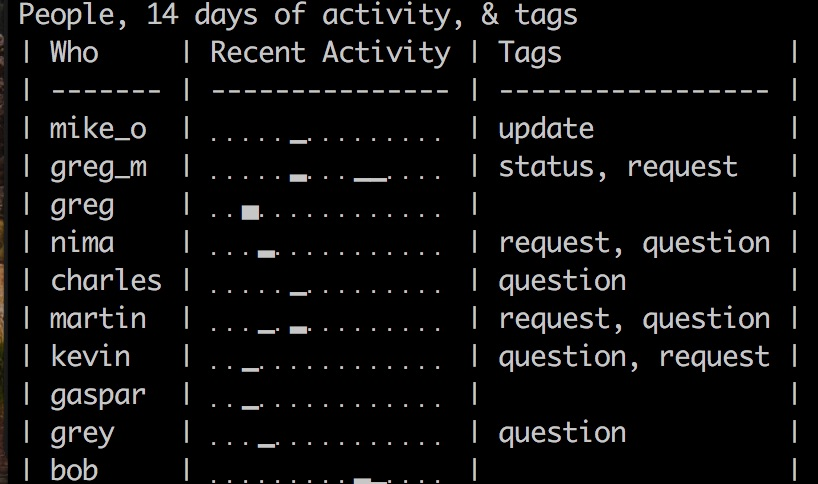

Hey! An Interruption Tracker for Mac users
Usage
Record an event
hey <names>
<names> is a space separated list of one or more
people’s names.
Note: all names are downcased in the database to save worrying about multiple entries when you accidentally type “bob” one time and “Bob” the next.
Tag an event
hey tag <event id> <tags>
hey retag <event id> <tags>
<event id> is usually last (to tag the most
recent event) but if you need
to tag a different one that was shown by hey list or hey data
you can enter its id.
<tags> is a space separated list of tags to associated with this event.
If you tag the same event twice then the new tags will be appended to the list.
If you retag an event the new list will replace the old one
List all tags
hey tags
Lists all the tags currently in the system
Record an event and tag it at the same time
Most of the time you create an event as it happens, and you don't know what it's going to be about yet, so you create it, then tag it later. But sometimes you create it just after it happened and you do know what it was about.
hey <names> + <tags>
<names> is a space separated list of one or more
people's names.
<tags> is a space separated list of tags to associated with this event.
Viewing recent events
hey or hey list or hey list 3
by default this will display the last 25 interruptions, but if you pass
hey list a number it will display that many.
$ hey list
Last 3 interruptions in chronological order...
| ID | Who |When | Tags |
| 105 | Bob, Mary |2017-06-17 08:53:48 | meeting, scheduled |
| 106 | Bob |2017-06-17 08:53:55 | question |
| 109 | Sam |2017-06-28 11:35:05 | task |
Seeing who's been interrupting you and why
One of the reports that comes with hey is thepeople_overview.
It shows the list of people you've interacted with recently, a little graph
of how many interactions per day, and a list of the tags associated with
those interruptions
Tags become pretty important here because you can see the topics that each person has needed you on. Once you know this you can write up some docs, take them aside to give them an explanation, or whatever else is appropriate to help minimize future interruptions.
Seeing when you're most likely to be interrupted
The interrupts_by_hour report will help you see what hours
of the day you're most likely to be interrupted. These are the hours
when you should either not plan on getting anything done, or recognize
that extra measures will have to be taken to get things done then.
$ hey report interrupts_by_hour
Interrupts By Hour:
o
|
o o |
| | |
| | | o
o | | | o |
| | | | | |
| | | | | |
| o | | | | |
| | | | | | |
| | | | | | |
| | | | | | |
| | | | | | |
o o o o o o o o o | | | o | | | | o o o o
00 01 02 03 04 05 07 07 08 09 10 11 12 13 14 15 16 17 18 19 23
Killing Things
kill is the keyword for... well, killing things. It should be
noted that there is no undo in hey!
hey kill
hey kill tag
hey kill event
Delete accidental people
hey kill <name>
(Note: No humans will be harmed in the execution of this command.)
Deletes that person from your database, and removes them from any events. If there are events that only involved that person, they will also be deleted.
Delete unwanted tags
hey kill <tag name>
Deletes that tag, but not any of the events tagged with it.
Delete events
hey kill event <last or event id>
See hey delete below.
Delete events
hey delete <last event id>
<last or event id> is either "last" (the last event) or
one of the ids shown by hey list